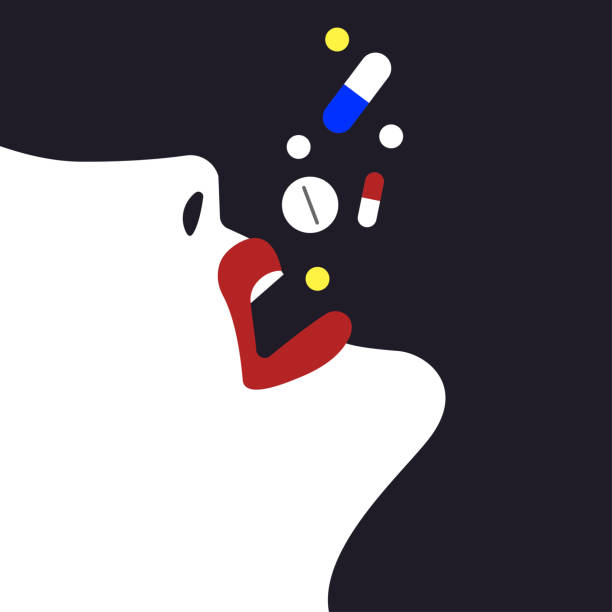

Abuse of Prescription ADHD Medicines Rising on College Campuses
A growing number of students are abusing prescription ADHD medicines on college campuses. Students turn to the medicines so they can stay awake longer and increase their ability to focus. Many students wrongly believe stimulants will improve their ability to learn and get better grades. ADHD medicines are also being used to curb appetites for weight loss. Some also use them to get high. But although these medicines are considered safe when taken as prescribed, they can cause health problems and addiction when not taken as they were intended.
Nearly one in every five college students abuses prescription stimulants, according to a new survey sponsored by the Partnership for Drug-Free Kids. The survey also found that one in seven non-students of similar age also report abusing stimulant medications. Young adults aged 18 to 25 report using the drugs to help them stay awake, study or improve their work or school performance. The most commonly abused stimulants are those typically prescribed for attention-deficit/hyperactivity disorder (ADHD), such as Adderall, Ritalin and Vyvanse, the survey found. "The findings shed a new and surprising light on the young adult who is abusing prescription stimulants," said Sean Clarkin, director of strategy and program management for the Partnership for Drug-Free Kids. "While there is some 'recreational' abuse, the typical misuser is a male college student whose grade point average is only slightly lower than that of non-abusers, but who is juggling a very busy schedule that includes academics, work and an active social life."
In research studies and media reports, ‘substance abuse’ may mean different things. First, when studying adolescents in general, many studies have shown that early-aged substance use, such as having a full drink of alcohol (not just a taste or a sip) before the age of 15, is associated with an increased risk of heavier or problem drinking later (Grant & Dawson, 1997). Thus, some studies have specifically examined whether childhood ADHD is associated with early consumption. One large widely cited study, the Multimodal Treatment of ADHD study (MTA), reported that alcohol, tobacco, and marijuana use was more likely to be initiated by early adolescence in youngsters with ADHD than for classmates in that study who did not have ADHD (Molina et al., 2007). At older ages, repeated or heavier levels of use become important to study, such as binge drinking of alcohol (Molina, Pelham et al., 2007) or dependence on nicotine and illicit drugs (Biederman et al., 2006; Lambert & Hartsough, 1998; Mannuzza et al., 1991).
As children become older, the way in which substance use is studied changes. This is because substance use disorders are often considered developmental disorders (Zucker 2006). An implication of this idea is that risk for substance use among children with ADHD is tied to the age at which the research is being conducted (Molina, Pelham et al., 2007). This helps to understand why some studies fail to find an increased risk for abuse or dependence in the teenage years (Molina et al., 2003; Biederman et al., 1997). Conversely, when adolescents or adults with substance abuse or dependence are the subject of study, substantial proportions are often diagnosable with ADHD (Wilens 2008).